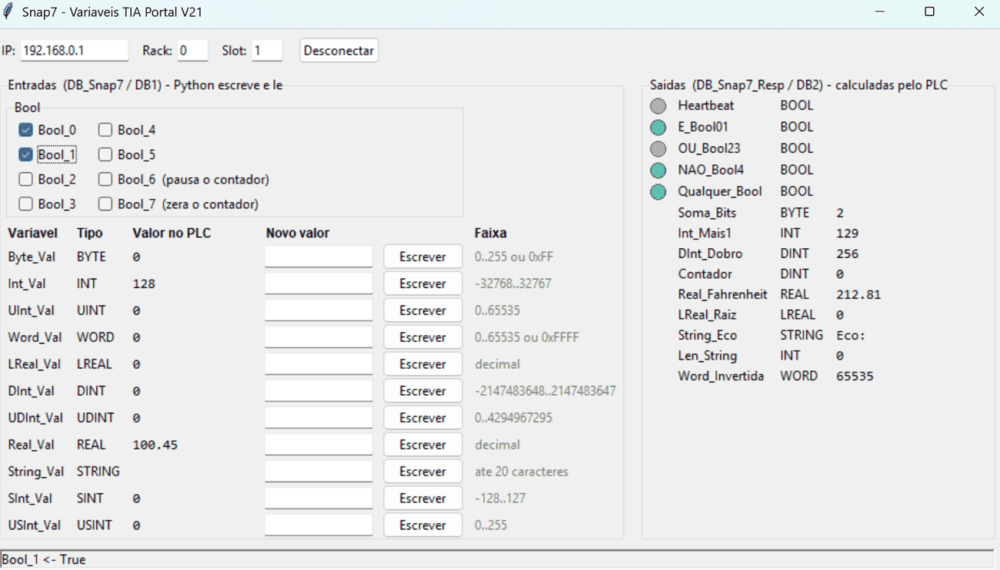

Demonstração interativa
Réplica da interface do projeto, com a lógica da FC_Logica_Snap7 reescrita em JavaScript.
Modo demonstração. Os valores e a lógica são simulados no navegador, sem conexão com PLC. O projeto real roda localmente em Python e se conecta à CPU pelo Snap7. Tente marcar
Bool_6 (pausa o contador) e Bool_7 (zera).Entradas · DB_Snap7 (DB1)
Saídas · DB_Snap7_Resp (DB2), calculadas pelo PLC
A interface real (Python + Tkinter)
É o que roda no seu computador e se conecta à CPU pelo Snap7.

Layout dos DBs
Acesso padrão (não otimizado), para o Snap7 endereçar por offset. Valores em big-endian, como no S7.
DB1 · entradas
| Offset | Variável | Tipo |
|---|---|---|
| 0.0–0.7 | Bool_0 … Bool_7 | Bool |
| 1 | Byte_Val | Byte |
| 2 | Int_Val | Int |
| 4 | UInt_Val | UInt |
| 6 | Word_Val | Word |
| 8 | LReal_Val | LReal |
| 16 | DInt_Val | DInt |
| 20 | UDInt_Val | UDInt |
| 24 | Real_Val | Real |
| 28 | String_Val | String[20] |
| 50 | SInt_Val | SInt |
| 51 | USInt_Val | USInt |
DB2 · saídas do PLC
| Offset | Variável | Tipo |
|---|---|---|
| 0.0–0.4 | Heartbeat, E_Bool01, OU_Bool23, NAO_Bool4, Qualquer_Bool | Bool |
| 1 | Soma_Bits | Byte |
| 2 | Int_Mais1 | Int |
| 4 | DInt_Dobro | DInt |
| 8 | Contador | DInt |
| 12 | Real_Fahrenheit | Real |
| 16 | LReal_Raiz | LReal |
| 24 | String_Eco | String[30] |
| 56 | Len_String | Int |
| 58 | Word_Invertida | Word |
Como usar o projeto
- No TIA Portal V21, habilite o PUT/GET na CPU e mantenha os DBs com acesso padrão.
- Baixe hardware e software na CPU ou no PLCSIM Advanced 8, com a CPU em RUN.
- Instale a biblioteca e rode a interface:
pip install python-snap7
python snap7_gui.pyO IP padrão é 192.168.0.1, rack 0 e slot 1. A versão em linha de comando é o snap7_variaveis.py. Detalhes completos no README do repositório.